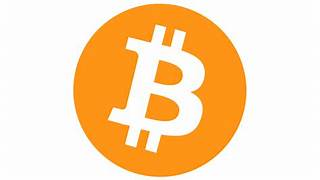
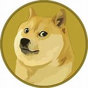
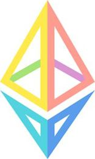

| Bitcoin | Dogecoin | Ethereum |
|---|---|---|
|  |  |  |
Bitcoin was created by Satoshi Nakamoto in 2008. It is a cryptocurrency designed to function as money and could be used as a form of payment outside the control of external entities. This removes the necessity of third-parties like mints or banks in financial transactions. |
Dogecoin was created by Jackson Palmer and Billy Markus in 2013 as a joke. Dogecoin is an open-source cryptocurrency. It is an altcoin launched in 2013 with an image of a Shiba Inu named Kabosu as its logo. Its blockchain's underlying techology comes from Litecoin. Dogecoin uses the Scrypt algorithm and its low prices and unlimited supply. |
Ether is the native cryptocurrency of the decentralized global software platform known as Ethereum. It is the world's second largest cryptocurrency only behind Bitcoin. It is the native token that facilitates the Ethereum network. |
-Founded by Satoshi Nakamoto in 2008.
|
-Founded by Jackson Palmer and Billy Markus in 2013.
|
-Ether faciliatates operations on the Ethereum network
|